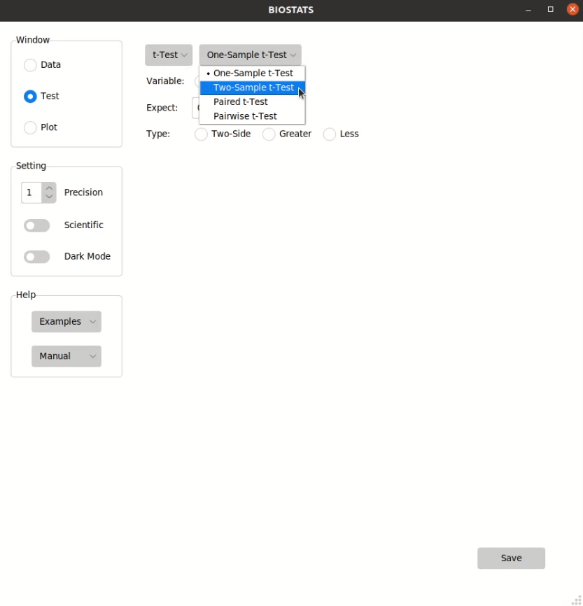
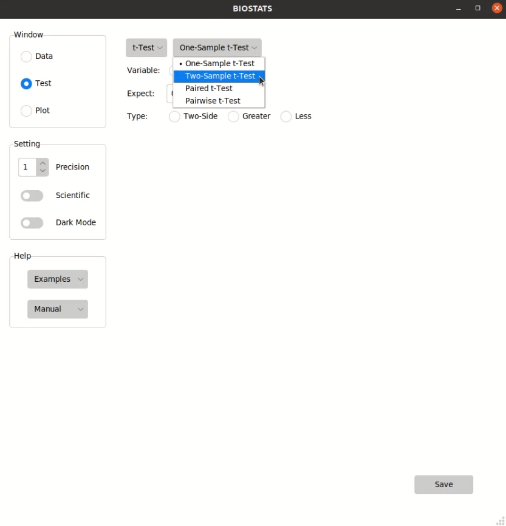

Perform Tests#
Select a test#
You can select a test from the menu in Test window:
 

{kind=link}
Tip
If you don’t know what test you should use, please take a look at API Reference, or visit the sites below.
Choose the options#
You can choose the options from the option bars:

Different kinds of options:
Option Type |
Function |
Note |
|---|---|---|
Radio Button |
Choose one option |
|
Check Button |
Choose multiple options |
Double click to unselect |
Entry Box |
Enter a number |
Press <Enter> to confirm |
Entry Box (>1) |
Enter multiple numbers |
Press <Enter> to confirm |
Spin Box |
Choose a number |
Tip
If the length of an option bar is too long and exceeds the display area, you can hover over the option bar and scroll up and down using a mouse or touchpad.
Note
The test results will not show if some options are not properly selected. Please take a look at API Reference to check the conditions for each test.
Save the result#
You can save the result by pressing Save button in Test window:


File types that can be saved by BIOSTATS:
File Type |
Extension |
|---|---|
Excel File |
.xlsx |
Markdown FIle |
.md |
Text File |
.txt |
Tip
You can press Ctrl + s to save the result.